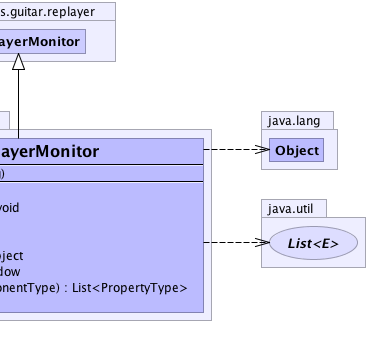

edu.umd.cs.guitar.replayer
Class JFCReplayerMonitor
java.lang.Object
 edu.umd.cs.guitar.replayer.GReplayerMonitor
edu.umd.cs.guitar.replayer.JFCReplayerMonitor
edu.umd.cs.guitar.replayer.GReplayerMonitor
edu.umd.cs.guitar.replayer.JFCReplayerMonitor
public class JFCReplayerMonitor
- extends edu.umd.cs.guitar.replayer.GReplayerMonitor
Replayer monitor for Java Swing (JFC) application
Generated by yDoc Evaluation Version
- Author:
- Bao Nguyen
-
-
 |
 |
| Fields inherited from class edu.umd.cs.guitar.replayer.GReplayerMonitor |
application |
| Methods inherited from class edu.umd.cs.guitar.replayer.GReplayerMonitor |
getApplication, isUseReg, setUseReg |
| Methods inherited from class java.lang.Object |
clone, equals, finalize, getClass, hashCode, notify, notifyAll, toString, wait, wait, wait |
JFCReplayerMonitor
public JFCReplayerMonitor(java.lang.String main_class)
- Parameters:
main_class -
setUp
public void setUp()
- Specified by:
setUp in class edu.umd.cs.guitar.replayer.GReplayerMonitor
cleanUp
public void cleanUp()
- Specified by:
cleanUp in class edu.umd.cs.guitar.replayer.GReplayerMonitor
getAction
public edu.umd.cs.guitar.event.GEvent getAction(java.lang.String actionName)
- Specified by:
getAction in class edu.umd.cs.guitar.replayer.GReplayerMonitor
getArguments
public java.lang.Object getArguments(java.lang.String action)
- Specified by:
getArguments in class edu.umd.cs.guitar.replayer.GReplayerMonitor
getWindow
public edu.umd.cs.guitar.model.GWindow getWindow(java.lang.String sWindowTitle)
- Specified by:
getWindow in class edu.umd.cs.guitar.replayer.GReplayerMonitor
selectIDProperties
public java.util.List<edu.umd.cs.guitar.model.data.PropertyType> selectIDProperties(edu.umd.cs.guitar.model.data.ComponentType comp)
- Specified by:
selectIDProperties in class edu.umd.cs.guitar.replayer.GReplayerMonitor
connectToApplication
public void connectToApplication()
- Specified by:
connectToApplication in class edu.umd.cs.guitar.replayer.GReplayerMonitor
delay
public void delay(int delay)
- Specified by:
delay in class edu.umd.cs.guitar.replayer.GReplayerMonitor